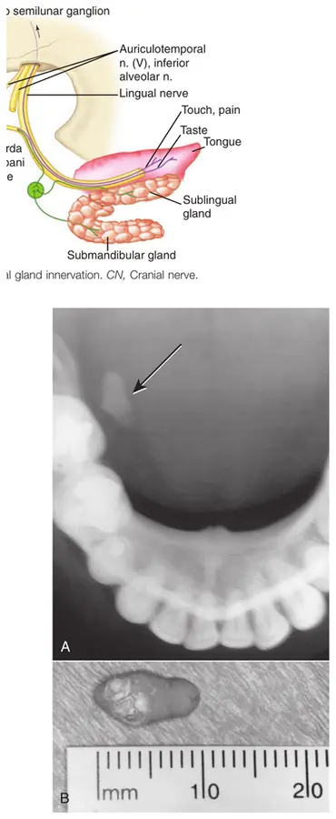
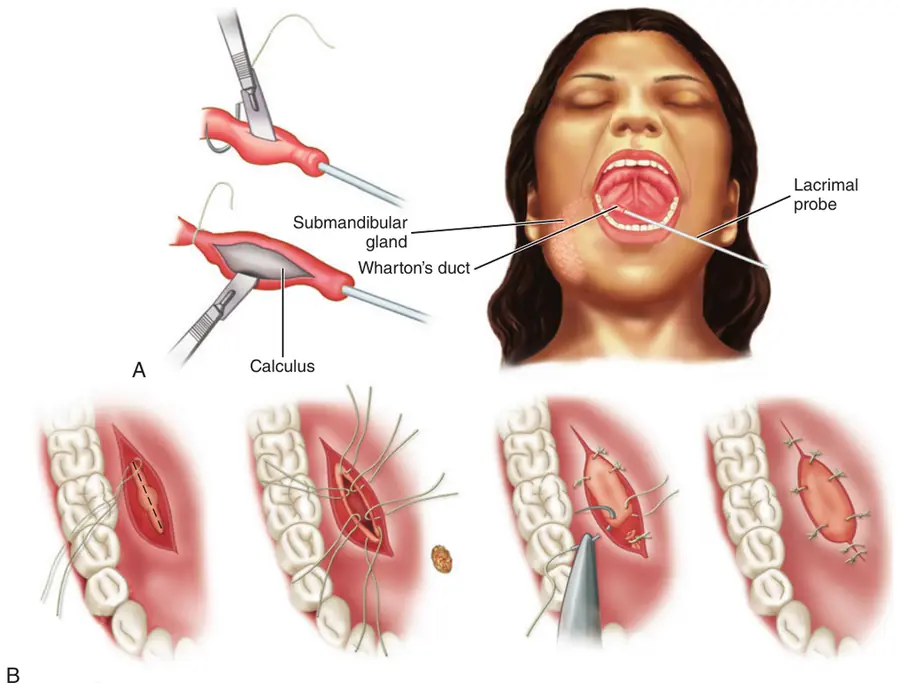

نسخه استخراجشده؛ ترجمه یا تأیید علمی انجام نشده است. وضعیت: captured
سیالولیتیازیس یا تشکیل سنگ در غدد بزاقی، دو برابر در مردان شایعتر است، با اوج بروز میان ۳۰ تا ۵۰ سالگی. و تشکیل سنگ چندگانه در تقریباً ۲۵ درصد بیماران با کالکولی بزاقی رخ میدهد.

و عوامل اتیوپاتوژنیک سنتی مرتبط با تشکیل سنگ — پنج عامل: انسداد، کاهش سرعت جریان بزاق، دهیدراسیون، تغییر pH بزاق مرتبط با سپسیس اوروفارنژیال، و اختلال در حلالیت کریستالوئید.
و مکانیسم: میکرولیتها یا سنگهای ریز میتوانند پس از رسوب در محلول فوقاشباع پلاگهای موکوسی یا فسفولیپیدهای غشایی درون وزیکولهای ترشحی اضافی، آشکار شوند. این میکرولیتها میتوانند علامتدار شوند و بهعنوان یک هسته عمل کنند که لایههای متوالی مواد آلی و غیرآلی روی آن رسوب میکند تا سنگ بزرگتری بسازد که سرانجام سیستم مجرایی را میبندد.
و نظریهی تازهتر — لیتوژنز رتروگرید: در این نظریه، مهاجرت برگشتی غذا، باکتری، اجسام خارجی و دبری از حفرهی دهان به سیستم مجرایی وارد میشود؛ این ذرات کوچک سپس هستهای میشوند که به تشکیل سنگ میانجامد، و این فرایند با عملکرد اسفنکتری دهانههای مجرا تسهیل میگردد که دبری را درون سیستم نگه میدارد و از عمل خودشویی طبیعی غده جلوگیری میکند.
و حالا عددها — بروز سنگ بر حسب غده:
و چرا اینقدر نامتوازن؟ چند دلیل روی هم:
و سنگ رادیواوپک است یا رادیولوسنت؟ بسته به غلظت کلسیم و درجهی بلوغ سنگ، هر دو ممکن است.
و تظاهر بالینی — کلاسیک و بهیادماندنی: تظاهرات وقتی آشکار میشوند که انسداد حاد مجرا در زمان غذا خوردن رخ دهد، آنجا که تولید بزاق بیشترین و جریانش تحریکشده است. تورم حاصل ناگهانی و معمولاً بسیار دردناک است. سپس ادم بهتدریج کم میشود، ولی تورم هرگاه جریان بزاق در برابر یک انسداد ثابت تحریک شود، بارها بازمیگردد.
و در کودکان: سیالولیتیازیس در کودکان نادر است، با تنها ۳ درصد موارد گزارششده در جمعیت کودکان؛ پسرها بیشتر از دخترها درگیر میشوند، و غدهی سابمندیبولار چپ شایعترین محل است.
مدیریت کالکولی سابمندیبولار به مدت علائم، تعداد دورههای تکراری، اندازهی سنگ، و شاید از همه مهمتر، محل سنگ بستگی دارد.

و آن خط تعیینکننده: سنگهای سابمندیبولار بهعنوان قدامی یا خلفی طبقهبندی میشوند، نسبت به خطی عرضی که در سراسر قوس مندیبل میان مولرهای اول پایین کشیده میشود.
سنگ قدامی: سنگهایی که قدامیتر از این خط باشند، عموماً در رادیوگرافی اکلوزال مندیبل بهخوبی دیده میشوند و میتوانند برای برداشتن داخلدهانی مناسب باشند.
و پس از برداشتن سنگ — سیالودوکوپلاستی و منطقش: مجرا مستقیماً ترمیم نمیشود، چون این میتواند به اسکار و تنگی پس از ترمیم بینجامد که خود به عود انسداد میانجامد.
در عوض: لبههای مجرا به مخاط کف دهان بخیه میشوند، و بزاق از دهانهی تازهساخته بیرون میآید نه از دهانهی اصلی قدامی.
و این عمل، چهار عامل سنگسازی را همزمان حذف میکند: کل طول مجرا کم میشود، دهانهی تازه بزرگتر است، پونکتوم حذف میگردد، و اثر جاذبه که به رکود بزاق میانجامید کاهش مییابد.
و پس از عمل: گاهی یک کانولا در دهانهی تازه گذاشته میشود تا از اسکار و تنگی جلوگیری کند؛ و صرفنظر از عمل انجامشده، بیماران تشویق میشوند در چند هفتهی نخست، جریان بزاق فراوان را با محرکهای بزاقی مانند میوههای مرکبات، آبنباتهای طعمدار، یا دستکم سواب گلیسیرین حفظ کنند.
سنگ خلفی — تا ۵۰ درصد موارد: سنگهای خلفی تا ۵۰ درصد موارد رخ میدهند و میتوانند در هیلوم غده یا درون خودِ مادهی غده باشند، که برداشتن داخلدهانی را بهعلت دسترسی محدود دشوار میکند.
و تصویربرداری: یک فیلم اکلوزال معمولی مندیبل بهعلت موقعیت خلفی سنگ احتمالاً آن را نشان نخواهد داد، پس رادیوگرافی پانورامیک، سیتی، یا CBCT ممکن است برای موضعیابی لازم شود.
و رویکرد کلاسیک: در سنگهای خلفی که داخلدهانی لمس نمیشوند، و در بسیاری موارد تشکیل مکرر و مزمن سنگ، ممکن است رویکرد خارجدهانی برای برداشتن غده (سیالوآدنکتومی) و سنگهای همراهش لازم شود.
ولی این مفهوم اخیراً به چالش کشیده شده — و دو عدد دلیلشاند: بازگشت عملکردی غده پس از برداشتن سنگ در ۷۸ درصد موارد با سینتیگرافی نشان داده شد، حال آنکه ۵۰ درصد غدد برداشتهشده در بررسی هیستوپاتولوژیک طبیعی بودند.
و جایگزین: لیتوتریپسی با موج شوک میتواند جایگزین بهتری برای سیالوآدنکتومی باشد، بهویژه در عصر اعمال کمتهاجمی حفظکنندهی غده. و بهطور مشخص: لیتوتریپسی برونبدنی با موج شوک، درمان انتخابی همهی کالکولی پاروتید و سنگهای پریهیلار یا داخلپارانشیمی سابمندیبولار با بزرگترین بُعد کمتر از ۷ میلیمتر شمرده میشود، هرجا که فناوری و تخصصش در دسترس باشد.
و برای دندانپزشک عمومی — یک راهنمای کاربردی: